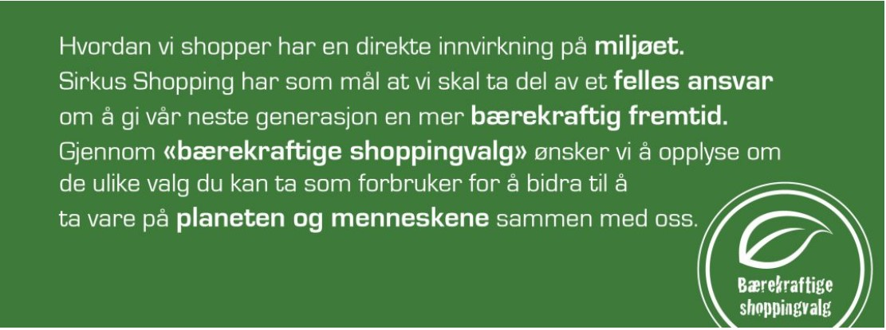
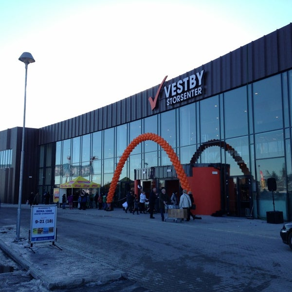
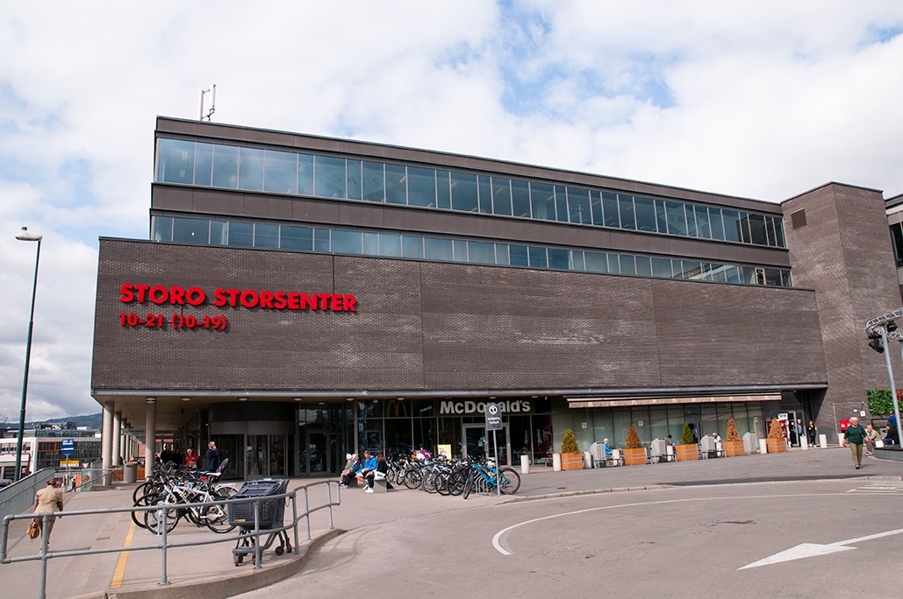
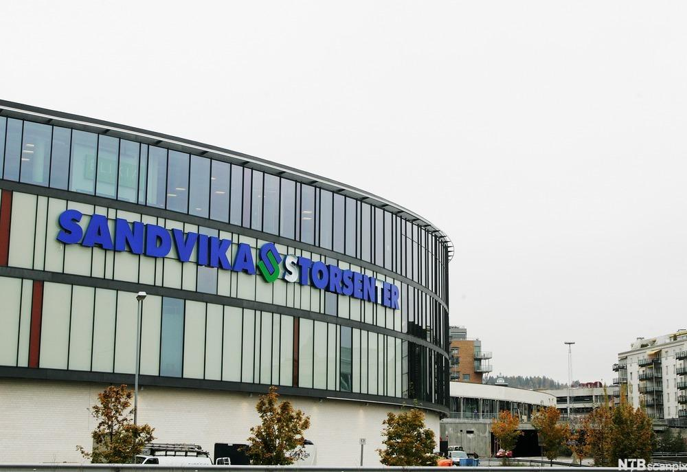

1. Sirkus shopping, Trondheim
Sirkus shopping er Trondheims største kjøpesenter. Den ligger ved Strindheim i Trondheim, og har mer enn 100 butikker. Sirkus har to etasjer, med helse og servicesenter. Sirkus shopping har også Trondheims beste opplagte parkeringsområde som er rundt 845 parkeringsplasser. Kjøpesenteret har blant annet en coop mega butikk, kleins, Life butikk, nille, clas ohlsen, Kappahl, Jernia, Normal og til og med klesbutikken Rituals. På Sirkus kjøpesenterets nettside i bærekraftighet så står det at de har investert i miljøvennlig ladestasjoner, og skal implementere flere ladestasjoner inntil 2022. Shoppingen av klesprodukter har også begynt å være mer miljøvennlig, f.eks Rituals bruker bionedbrytbar materialer, eller gjenrukelig materialer. Klesplaggene bruker miljøvennlig bomull, og polyester.
2. Kuben, Hønefoss
Kuben er Ringerikes kommune mest populæreste kjøpesenter. Den er kanskje ikke den største, men for minst opp til 100 besøkende daglig (bortsett fra søndager). Kuben har rundt 60 butikker, pluss sitt helsesenter. Kuben har blant annet Intersport sportsbutikk, Nille, Ringo lekebutikk, Meny, osv. Kuben har også et eget kildesortering lokale helt nede i kjelleren på kuben. Dette gjør Kuben meget miljøansvarlig, men det har ikke noe ladestasjoner for elbiler.

Photo Credits: https://scalaeiendom.no/
3. Vestby Storsenter, Verpet
Vestby Storsenter har over 40 butikker og ligger ved Verpet i Vestby. Vestby storsenter har mange gode restauranter, og andre spisesteder. Kjøpesenteret har vært valgt til Norges 4. beste storsenter og har fått flere hundre tusen besøkende hvert år.
Photo Credits: https://foursquare.com/
4. Storo storsenter, Oslo
Storo er Oslos mest populæreste og største storsenter. Storsenteret har mer enn 140 butikker, og ligger sentralt på Storo og Nydalen i bydel Sagene i Oslo. Storo har fått mange gode tilbakemeldinger fra samfunnet i Oslo, blant annet så liker de butikkene elkjøp, JOE & THE JUICE, JORDBÆRPIKENE, KICKS, LEVI'S STORE, MANGO, og mange flere. Storo er eid av Norges største hotell bransje Thon Hotell. Klimarapporten fra Storo har vært positivt, der butikkene i Storo oppmuntrer kundene sine til å være mer miljøvennlig, og bruke mindre plast og annet klimafarlig forbruk. Det negative med Storo storsenter er at det ikke befinner seg så mye ekte planteliv på senteret. Det vill vært fint om det hadde vært plantet noen fine innendørs trær.
Photo Credits: https://lhc.no/storo-storsenter/
5. Sandvika Storsenter, Bærum
Sandvika Storsenter er Norges største Storsenter, med over 200 butikker. Storsenteret ligger sentralt rett ved E18, tog- og busstasjon i Sandvika i Bærum. Sandvika storsenter ser helt fantastisk ut, de har god hygiene kontroll, og alt fra arkitektur passer sammen. Sandvika storsenter for besøkende fra Danmark, Sverige, Finland og til og USA. Sandvika er også eiet av Thon eiendom, og tjener store andel profitt fra selve kjøpesenteret. Sandvika sette også opp ulike aktiviteter for lokalmiljøet i ulike årstider, som på påsken, sommeren eller til julen. På Sandvikas storsenter sitt nettsidet så såtr det ikke så mye om miljøvern, selv om vi vet at noen av butikkene fokuserer på å kutte ned plast, og spiselig matavfall. Sandvika må fokusere på å sette mer grønt liv med planter rundt omkring senteret, og bruke mer miljøvennlig materialer.
Photo Credits: https://ndla.no/